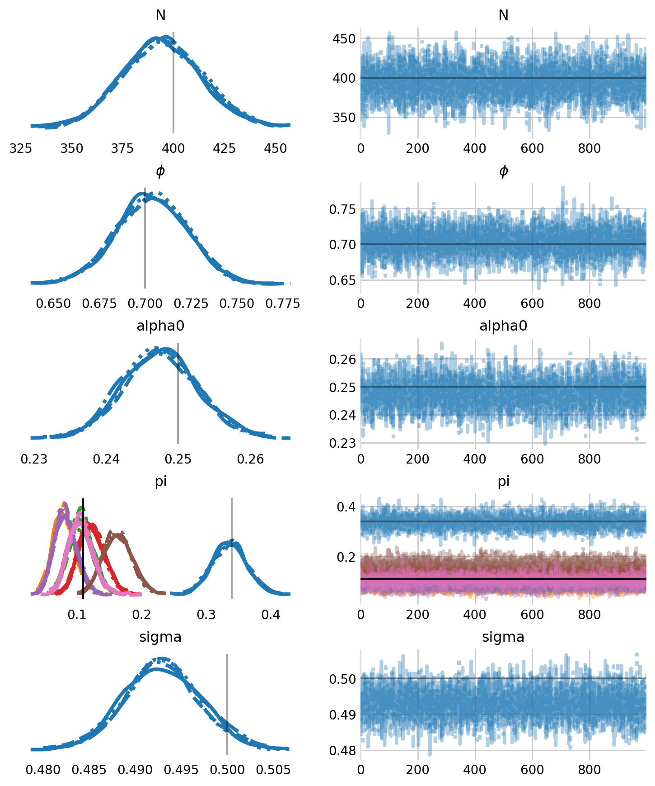
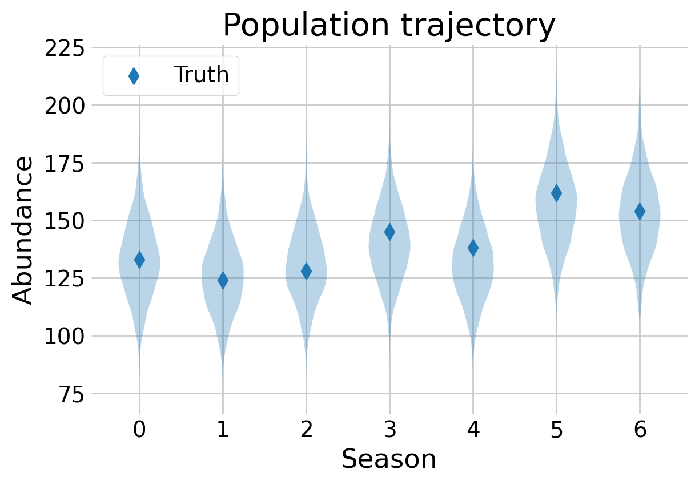

%config InlineBackend.figure_format = 'retina'
import os
# # this suppresses a warning about the cuda backend
# os.environ['TF_CPP_MIN_LOG_LEVEL'] = '2'
# settings for cpu
os.environ['XLA_FLAGS'] = '--xla_cpu_multi_thread_eigen=false intra_op_parallelism_threads=4'
os.environ['JAX_ENABLE_X64'] = 'False'
import numpyro
numpyro.set_host_device_count(4)
from itertools import product
from jax import random, debug
from jax.scipy.special import logit
from numpyro.contrib.control_flow import scan
from numpyro.infer import NUTS, MCMC, Predictive
import arviz as az
import jax.numpy as jnp
import matplotlib.pyplot as plt
import numpy as np
import numpyro
import numpyro.distributions as dist
import pandas as pd
import seaborn as sns
# plotting defaults
plt.style.use('fivethirtyeight')
plt.rcParams['axes.facecolor'] = 'white'
plt.rcParams['figure.facecolor'] = 'white'
plt.rcParams['axes.spines.left'] = False
plt.rcParams['axes.spines.right'] = False
plt.rcParams['axes.spines.top'] = False
plt.rcParams['axes.spines.bottom'] = False
sns.set_palette("tab10")
# mcmc hyperparameters
WARMUP_COUNT = 500
SAMPLE_COUNT = 1000
CHAIN_COUNT = 4
RANDOM_SEED = 1792
# simulation hyperparameters
SESSION_COUNT = 7
SUPERPOPULATION_SIZE = 400
APPARENT_SURVIVAL = 0.7
INITIAL_PI = 0.34
BASELINE_RATE = 0.25
SIGMA = 0.5
M = 1000
GRID_WIDTH = 10
OCCASION_COUNT = 20
BUFFER = 2
U_SIGMA = 5
# make the labels on arviz plots nicer
labeller = az.labels.MapLabeller(
var_name_map={"psi": r"$\psi$", 'gamma': r"$\gamma$", 'alpha': r'$\alpha$',
'epsilon': r"$\epsilon$", 'p': r"$p$" , 'beta': r'$\beta$',
'phi': r'$\phi$', 'alpha_t': r'$\alpha_t$',}
)
def sim_js():
"""Simulate capture histories with a spatial Jolly-Seber model.
Simulation code adapted from Kery and Schaub (2012), Chapter 10 and Gardner
et al (2017) via Olivier Gimenez:
https://oliviergimenez.github.io/basics_spatial_capturerecapture/
"""
rng = np.random.default_rng(RANDOM_SEED)
interval_count = SESSION_COUNT - 1
# simulate entry into the population
pi_rest = (1 - INITIAL_PI) / interval_count
pi = np.concatenate([[INITIAL_PI], np.full(interval_count, pi_rest)])
# which occasion did the animal enter in?
entry_matrix = rng.multinomial(n=1, pvals=pi, size=SUPERPOPULATION_SIZE)
entry_occasion = entry_matrix.nonzero()[1]
_, entrant_count = np.unique(entry_occasion, return_counts=True)
# zero if the animal has not yet entered and one after it enters
entry_trajectory = np.maximum.accumulate(entry_matrix, axis=1)
# flip coins for survival between occasions
survival_draws = rng.binomial(
1, APPARENT_SURVIVAL, (SUPERPOPULATION_SIZE, interval_count)
)
# add column such that survival between t and t+1 implies alive at t+1
survival_draws = np.column_stack([np.ones(SUPERPOPULATION_SIZE), survival_draws])
# ensure that the animal survives until it enters
is_yet_to_enter = np.arange(SESSION_COUNT) <= entry_occasion[:, None]
survival_draws[is_yet_to_enter] = 1
# once the survival_draws flips to zero the remaining row stays 0
survival_trajectory = np.cumprod(survival_draws, axis=1)
# animal has entered AND is still alive
state = entry_trajectory * survival_trajectory
state = state.astype(np.int8)
# create the trapping grid
grid_height = GRID_WIDTH
grid = product(range(GRID_WIDTH), range(grid_height))
grid = np.array(list(grid))
trap_count = len(grid)
# define the state space
minima = grid.min(axis=0) - BUFFER
maxima = grid.max(axis=0) + BUFFER
# simulate activity centers for every individual in the superpopulation
center_coords = rng.uniform(minima, maxima, size=(SUPERPOPULATION_SIZE, 2))
# true distance between the trap and the activity centers
distance = jnp.linalg.norm(
center_coords[:, None, :] - grid[None, :, :],
axis=2
)
# simulate potential captures
p = BASELINE_RATE * np.exp(-(distance**2) / (2 * SIGMA**2))
capture = rng.binomial(OCCASION_COUNT, p[..., None],
size=(SUPERPOPULATION_SIZE, trap_count, SESSION_COUNT))
# calculate actual captures, shape: (super_size, trap_count, session_count)
capture_history = capture * state[:, np.newaxis, :]
# remove the non-detected individuals
was_captured = capture_history.sum(axis=(1, 2)) > 0
capture_history = capture_history[was_captured]
# augment the history with nz animals
n = was_captured.sum()
nz = M - n
all_zero_history = np.zeros((nz, trap_count, SESSION_COUNT), dtype=np.int8)
capture_history = np.vstack([capture_history, all_zero_history]).astype(np.int8)
# return a dict with relevant summary stats
N_t = state.sum(axis=0)
# deaths at time t
D_t = (state[:, :-1] * (1 - state[:, 1:])).sum(axis=0)
# Print simulation summary
print(f"Simulation complete: {n}/{SUPERPOPULATION_SIZE} individuals detected")
print(f"Population trajectory: N = {N_t}")
print(f"Recruits per session: B = {entrant_count}")
print(f"Deaths per session: D = {D_t}")
capture_history = np.moveaxis(capture_history, 2, 0)
return {
'capture_history': capture_history,
'N_t': N_t,
'B': entrant_count,
'trapxy': grid,
'trap_count': trap_count,
'center_coords': center_coords,
'z': state,
'minima': minima,
'maxima': maxima,
'super_size': M,
'occasion_count': OCCASION_COUNT,
'session_count': SESSION_COUNT
}Open spatial capture-recapture
Estimating survival and density with NumPyro
In this notebook, I introduce how to estimate survival and abundance with open spatial capture-recapture (SCR) models. Open SCR models are a combination of closed population SCR models and Jolly-Seber models. The basic open SCR model assumes that animals enter and leave the population according to a Jolly-Seber process, each animal has an activity center, and the probability of encountering the animal declines with distance from its activity center. In this example, we will assume that each animal’s activity center is constant across sampling occasions, and that activity centers are uniformly distributed across the state space.
In this example, I will use simulated data to ensure that we’re getting reasonable results. That said, the ovenbird dataset from the PyMC SCR notebook would be a great example here!
Like the simulation code, the NumPyro model is essentially the same as the NumPyro Jolly-Seber model. The difference is that the detection process is more complex, in that we need to simulate activity centers, compute the distance pairwise distance matrix from the activity centers and the traps, then compute the detection probability for each individual at each trap. Again, we will marginalize out the latent existential state, \(z\), and scan over the sampling occasions.
def spatial_js(data):
# unpack everything in the data dictionary
history = data['capture_history']
trapxy = jnp.array(data['trapxy'])
trap_count = data['trap_count']
xmin, ymin = jnp.array(data['minima'])
xmax, ymax = jnp.array(data['maxima'])
super_size = data['super_size']
occasion_count = data['occasion_count']
session_count = data['session_count']
### Priors ###
# specify gamma prior as a function of pi and psi
psi = numpyro.sample('psi', dist.Beta(0.001, 1))
pi = numpyro.sample('pi', dist.Dirichlet(jnp.ones(session_count)))
# compute the removal probabilities as a function of psi and pi
gamma = jnp.zeros(session_count)
# the `vector.at[0].set(1)` notation is jax for `vector[0] = 1`
gamma = gamma.at[0].set(psi * pi[0])
for t in range(1, session_count):
denominator = jnp.prod(1 - gamma[:t])
gamma = gamma.at[t].set(psi * pi[t] / denominator)
gamma = numpyro.deterministic('gamma', gamma)
# apparent survival
phi = numpyro.sample('phi', dist.Beta(2, 2))
# baseline encounter rate
g0 = numpyro.sample('alpha0', dist.Beta(4, 1))
# detection range
sigma = numpyro.sample('sigma', dist.Uniform(0, U_SIGMA))
# sample activity center locations and compute capture probability at traps
with numpyro.plate("activity_centers", super_size):
sx = numpyro.sample('sx', dist.Uniform(xmin, xmax))
sy = numpyro.sample('sy', dist.Uniform(ymin, ymax))
center_coords = jnp.stack([sx, sy], axis=1)
# pairwise distance between activity centers and the traps
x_norm = jnp.sum(center_coords**2, axis=1, keepdims=True)
y_norm = jnp.sum(trapxy**2, axis=1, keepdims=True)
distance2 = x_norm + y_norm.T - 2 * center_coords @ trapxy.T
# linear model for scr detection model
p = g0 * jnp.exp( - distance2 / (2 * sigma ** 2))
#### Transition existential states and compute scr likelihood ####
def transition_and_capture(carry, y_current):
# this is what the previous iteration of transition_and_capture returned
z_previous, t = carry
# transition probability matrix
trans_probs = jnp.array([
[1 - gamma[t], gamma[t], 0.0], # From not yet entered
[ 0.0, phi, 1 - phi], # From alive
[ 0.0, 0.0, 1.0] # From dead
])
with numpyro.plate("animals", super_size, dim=-1):
# probability of transitioning depends on the previous state
mu_z_current = trans_probs[z_previous]
z_current = numpyro.sample(
"state",
dist.Categorical(dist.util.clamp_probs(mu_z_current)),
infer={"enumerate": "parallel"}
)
# probability of encountering the individual based on the state
mu_y_current = jnp.where(z_current == 1, 1, 0) * p.T
mu_y_current = dist.util.clamp_probs(mu_y_current)
# likelihood of the scr data
with numpyro.plate('traps', trap_count, dim=-2):
numpyro.sample(
"photo_id_data",
dist.Binomial(occasion_count, mu_y_current),
obs=y_current.T
)
return (z_current, t + 1), None
# start everyone in the not yet entered state
state_init = jnp.zeros(super_size, dtype=jnp.int32)
scan(
transition_and_capture,
(state_init, 0),
history
)
sim_data = sim_js()Simulation complete: 300/400 individuals detected
Population trajectory: N = [133 124 128 145 138 162 154]
Recruits per session: B = [133 33 44 54 37 57 42]
Deaths per session: D = [42 40 37 44 33 50]This is the first NumPyro model where the difference in performance between CPU and GPU is vast. As such, I will use the GPU to sample the models. To use GPU in NumPyro, your computer will have to have a CUDA compatible (i.e., NVIDIA) GPU. By default, these come with laptops and PCs designed for gaming. Alternatively, almost all university or governmental high performance computing clusters (HPCs) will have GPUs. Another option would be Google Colab, which allows people to temporarily rent GPU resources.
This model takes about 2 minutes to sample on GPU. While I am not quite patient enough to run it on CPU, it likely takes over an hour to sample on CPU.
from numpyro.infer import init_to_feasible
rng_key = random.PRNGKey(RANDOM_SEED)
# specify which sampler you want to use
nuts_kernel = NUTS(spatial_js)
# configure the MCMC run
mcmc = MCMC(nuts_kernel, num_warmup=WARMUP_COUNT, num_samples=SAMPLE_COUNT,
num_chains=CHAIN_COUNT)
# run the MCMC
mcmc.run(rng_key, sim_data)samples = mcmc.get_samples(group_by_chain=True)
idata = az.from_dict(samples)
idata.posterior['N'] = idata.posterior['psi'] * M
pi_rest = (1 - INITIAL_PI) / (SESSION_COUNT - 1)
pi = np.concat([[INITIAL_PI], np.full(SESSION_COUNT - 1, pi_rest)])
parameters = ['N', 'phi', 'alpha0', 'pi', 'sigma']
axes = az.plot_trace(
idata,
figsize=(8,10),
var_names=parameters,
labeller=labeller,
lines=[("phi", {}, [APPARENT_SURVIVAL]), ("alpha0", {}, [BASELINE_RATE]),
("pi", {}, pi), ("N", {}, [SUPERPOPULATION_SIZE]),
('sigma', {}, SIGMA)],
)
plt.subplots_adjust(hspace=0.4)
[axes[i, 0].grid(False) for i in range(len(parameters))]
plt.show()
As we can see, the model returns parameter estimates well, although some of the entry probabilities, \(pi_t\) are clearly biased. Again, we can recover discrete latent states with Predictive.
def sample_z(model, posterior_samples, data):
'''Samples the posterior predictive distribution for z given the histories'''
# initialize the posterior predictive distribution
predictive = Predictive(
model,
posterior_samples=posterior_samples,
return_sites=["state"]
)
# sample z
rng_key = random.PRNGKey(RANDOM_SEED)
latent_samples = predictive(rng_key, data)
return latent_samples["state"]
# generate the posterior predictive distribution for N
samples = mcmc.get_samples()
z = sample_z(spatial_js, samples, sim_data)
ever_alive = z.max(axis=1) > 0
samples['N'] = ever_alive.sum(axis=1)fig, ax = plt.subplots(figsize=(6,4))
t = np.arange(SESSION_COUNT)
N_t_samps = (z == 1).sum(axis=2)
ax.scatter(t, sim_data['N_t'], color='C0', marker='d', label='Truth', s=60)
ax.violinplot(N_t_samps, t, showmedians=False, showextrema=False)
ax.legend()
ax.set_xlabel(r'Season')
ax.set_ylabel(r'Abundance')
ax.set_title(r'Population trajectory')
plt.show()
The model is able to recreate the population trajectory over time. While some estimates are slightly off, they are all well within the estimates of uncertainty.